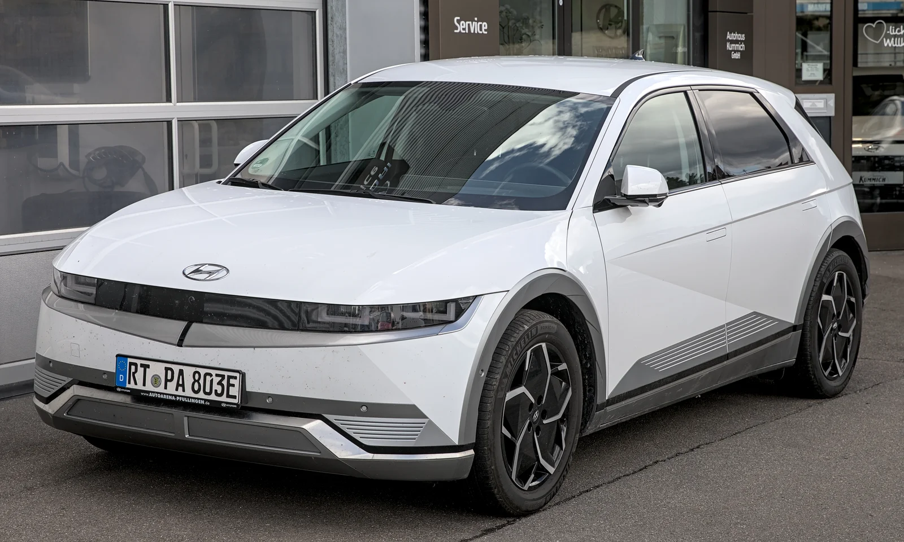

▲ UBESS에 들어가는 사용 후 배터리는 현대차·기아의 전용 전기차 플랫폼 E-GMP 차량에서 나온다. 사진은 아이오닉 5

▲ 전기차 배터리팩 내부. 주행에 쓰기엔 성능이 떨어져도 잔존 용량(SOH) 70~80% 수준이면 ESS 같은 정치형 용도로는 여전히 쓸 수 있다
1. UBESS란 무엇인가 — '사용 후 배터리'가 다시 전기를 저장하는 법
현대차그룹이 LG에너지솔루션, 현대엔지니어링, 원익피앤이와 함께 사용 후 배터리 기반 에너지저장장치 'UBESS(Used Battery Energy Storage System)' 실증을 시작했다. 업계 매체 카가이에 따르면 4개 사는 2026년 9월 10일 경기 화성시 원익피앤이 동탄 사업장에서 UBESS 실증 기념식을 열고 본격적인 검증에 들어갔다. UBESS는 전기차에서 탈거된 사용 후 배터리를 모아 만든 에너지저장장치로, 전기요금이 낮은 시간대에 전력을 저장했다가 요금이 비싼 시간대에 급속충전기를 통해 전기차를 충전하는 방식으로 운영된다. 전력 수요가 몰리는 시간을 피해 저장해둔 전기를 꺼내 쓰는 '피크 시프트'형 충전 인프라인 셈이다.
전기차 배터리는 완속 대비 잦은 급속충전과 온도 변화를 견디며 수명을 소모하지만, 주행 성능 기준을 벗어난 뒤에도 곧바로 폐기 대상이 되지는 않는다. 잔존수명(State of Health, SOH)이 70~80% 수준까지 떨어진 배터리는 차량 구동에는 부적합해도, 출력 변동이 크지 않은 정치형(고정형) 저장 용도로는 여전히 활용 가치가 있다는 것이 이번 실증의 전제다. 이 지점에서 UBESS는 배터리를 원료 단위로 되돌리는 '재활용(recycling)'과는 다른, 배터리를 형태 그대로 다시 쓰는 '재사용(reuse)' 접근에 해당한다.
2. 화성 동탄에 들어선 200kWh 실증 — 4개 사는 무엇을 맡았나
이번 실증 설비는 총 200kWh 규모의 UBESS 시스템으로, 국내에서는 처음 시도되는 사례다. 실증에 쓰인 배터리팩은 현대차·기아의 전용 전기차 플랫폼 'E-GMP'를 적용한 차량에서 나온 사용 후 배터리다. 4개 사는 역할을 나눠 맡았다.

▲ 배터리 셀·팩 제조 공정 예시. LG에너지솔루션은 이번 실증에서 사용 후 배터리팩을 UBESS로 제작하고, 배터리 진단·운영 기술을 지원하는 역할을 맡았다
| 참여사 | 담당 역할 |
|---|---|
| 현대차·기아 | 사용 후 배터리 제공, 안전하고 효율적인 활용 체계 구축 |
| LG에너지솔루션 | 사용 후 배터리팩 기반 UBESS 제작, 배터리 진단·운영 기술 지원 |
| 현대엔지니어링 | 충전 인프라 운영 경험을 바탕으로 한 사업성 검토 |
| 원익피앤이 | 충전기 제조 기술 기반 설비 운영·기술 검증, 실증 부지(동탄 사업장) 제공 |
4개 사는 이번 실증을 통해 충방전 제어 알고리즘, 시스템 안전성, 배터리 성능 유지 여부, 충전 서비스 품질 등을 종합적으로 검증할 계획이라고 밝혔다. 단순히 UBESS가 물리적으로 작동하는지를 넘어, 급속충전 서비스의 품질을 유지하면서도 안정적으로 운영할 수 있는지를 실제 환경에서 확인하겠다는 취지다.
3. 전기차 배터리 순환경제에서 UBESS가 갖는 의미
전기차 보급이 늘어날수록 '늙은 배터리'를 어떻게 처리할지가 산업 전반의 숙제로 떠오르고 있다. 국내에서도 초기 전기차 보급 물량이 배터리 교체·폐차 주기에 들어서면서 사용 후 배터리 발생량이 빠르게 늘어나는 추세다. 배터리를 분해해 니켈·코발트·리튬 등 금속을 뽑아내는 재활용 방식은 원자재 확보 측면에서 의미가 있지만, 공정 비용과 에너지가 많이 든다. 반면 UBESS처럼 배터리팩을 형태 그대로 재사용하는 방식은 분해·정련 과정 없이 배터리에 남은 잔존 가치를 곧바로 활용할 수 있어, 자원 순환의 효율이 상대적으로 높다는 평가를 받는다.
특히 이번 실증은 사용 후 배터리를 '전기차 충전 인프라'라는 관련성 높은 용도에 바로 연결했다는 점이 특징이다. 전기차에서 나온 배터리가 다시 전기차를 충전하는 데 쓰이는 구조로, 배터리 제조사(LG에너지솔루션)와 완성차 업체(현대차·기아), 충전 인프라·설비 업체(현대엔지니어링, 원익피앤이)가 한 고리로 묶인 셈이다. 이런 수직 계열화는 사용 후 배터리의 수거·이력 관리·안전성 검증까지 한 번에 다룰 수 있다는 점에서, 배터리 이력이 불분명한 상태로 유통되는 것보다 안전성과 품질 관리 측면에서 유리하다.
4. 국내외 유사 사례 비교 — 해외는 이미 몇 걸음 앞서 있다
사용 후 전기차 배터리를 ESS로 돌려쓰는 시도는 해외에서 먼저 상업화 단계에 들어섰다. 독일에서는 2016년부터 BMW, 전력회사 바텐펠(Vattenfall), 보쉬가 함부르크에 사용 후 배터리 기반 ESS를 구축해 운영해왔다. 100대 이상의 전기차에서 나온 배터리 모듈 2,600개를 모아 2MW(2,800kWh) 규모로 구성했으며, 전력망 안정화용 예비 전력으로 쓰인다.
일본에서는 닛산이 2010년 스미토모상사와 합작으로 설립한 '4R 에너지(4R Energy)'를 통해 리프(LEAF)의 사용 후 배터리를 재사용해왔다. 미국에서는 그린차지네트웍스(Green Charge Networks)와 협력해 상업용 에너지저장 사업에 사용 후 배터리를 투입한 바 있다. 최근에는 배터리 재활용 업체 레드우드 머티리얼즈(Redwood Materials)가 제너럴모터스(GM)의 사용 후 배터리 약 100개를 모아 1.5MW 규모로 구성, GM 미시간 공장에 전력을 공급하는 계획을 내놓기도 했다.
| 사례 | 참여 주체 | 규모·특징 |
|---|---|---|
| UBESS (한국, 2026) | 현대차·기아, LG에너지솔루션, 현대엔지니어링, 원익피앤이 | 200kWh, E-GMP 사용 후 배터리로 급속충전 전력 공급, 국내 최초 |
| 함부르크 ESS (독일, 2016~) | BMW, 바텐펠, 보쉬 | 2MW·2,800kWh, 전기차 100대 이상분 배터리 모듈 2,600개, 전력망 안정화용 |
| 4R 에너지 (일본, 2010~) | 닛산, 스미토모상사 | 리프 사용 후 배터리 재사용, 미국 등지에서 상업 ESS로 확장 |
| 레드우드 머티리얼즈-GM (미국, 2026) | 레드우드 머티리얼즈, 제너럴모터스 | 1.5MW, 사용 후 배터리 약 100개로 구성, 공장용 전력 공급 |
해외 사례들과 비교하면 UBESS 실증의 200kWh 규모는 아직 초기 단계다. 다만 배터리 제조사가 직접 UBESS 제작과 진단·운영 기술을 맡아 안전성과 성능 관리를 함께 다룬다는 점, 완성차·배터리·인프라 업체가 국내에서 한 컨소시엄으로 묶였다는 점은 향후 확장 가능성을 가늠할 수 있는 요소로 꼽힌다.
5. 향후 전망과 과제 — 상용화까지 남은 숙제
이번 실증은 어디까지나 기술 검증 단계로, 상용화까지는 넘어야 할 과제가 남아 있다. 우선 사용 후 배터리마다 열화 정도와 잔존 성능이 제각각이어서, 이를 정확히 진단하고 등급을 매기는 표준화된 기준이 필요하다. 서로 다른 이력의 배터리를 하나의 UBESS로 묶었을 때 충방전 성능이 균일하게 유지되는지, 장기간 운영했을 때 화재 등 안전 이슈가 없는지도 실증을 통해 확인해야 할 대목이다.

▲ 국내 전기차 충전소의 급속충전기. UBESS는 전기요금이 저렴한 시간대에 저장한 전력을 이런 급속충전기를 통해 공급하는 방식으로 운영된다
경제성도 관건이다. 사용 후 배터리를 수거·진단·재조립하는 과정에는 별도의 비용이 들어가기 때문에, 신품 배터리 기반 ESS 대비 가격 경쟁력을 확보하지 못하면 실증에서 그칠 위험이 있다. 해외에서도 재사용 배터리 ESS의 kWh당 비용이 신품 대비 충분히 낮아야 사업성이 성립한다는 지적이 꾸준히 나온다. 여기에 사용 후 배터리의 소유권과 이력 관리, 안전 인증 등을 규정하는 국내 제도 정비도 병행돼야 한다.
그럼에도 전기차 보급이 계속 늘어나는 한 사용 후 배터리 발생량도 함께 늘어날 수밖에 없다는 점에서, UBESS와 같은 재사용 모델은 배터리 순환경제를 완성하는 데 필요한 한 축으로 꼽힌다. 완성차·배터리·인프라 업체가 함께 실증에 나선 이번 협력이 실제 상용 모델로 이어질 수 있을지, 앞으로의 검증 결과에 관심이 쏠린다. 관련 소식은 카가이 기사에서 확인할 수 있다. 바로가기
✅ UBESS 실증, 이것만은 확인하세요
· 2026년 9월 10일 경기 화성 원익피앤이 동탄 사업장에서 실증 기념식 개최
· 총 200kWh 규모, 국내 최초 사용 후 배터리 기반 ESS 실증
· 현대차·기아(배터리 제공), LG에너지솔루션(UBESS 제작·진단), 현대엔지니어링(사업성 검토), 원익피앤이(설비 운영·부지)가 참여
· E-GMP 플랫폼 사용 후 배터리를 급속충전기 전력원으로 재사용
· 해외에서는 BMW·바텐펠(독일), 닛산·4R에너지(일본), 레드우드 머티리얼즈·GM(미국) 등이 유사 모델 운영 중
· 배터리 진단 표준화, 안전성 검증, 경제성 확보가 상용화의 남은 과제